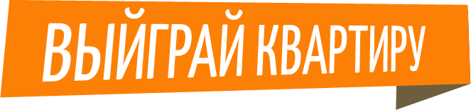
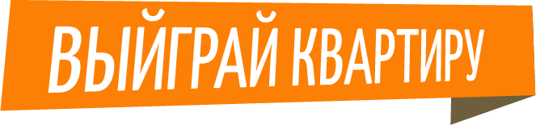

Справочная служба
spravka@carefood.kz
+7 727 228 14 96
«КВАРТИРНАЯ ЗАКУПКА»
Условия
розыгрыша
Правила участия в розыгрыше
После публикации нашей акции к нам не прибегут к сожалению, толпы желающих поучаствовать. А все потому, что они просто об этом еще не знают. Ваша задача теперь оповестить как можно большое количество пользователей вконтакте. Для этого Вам нужно выбрать паблик или группу и купить там рекламу на этот пост. Здесь важно работаете ли Вы со всей Россией или только в своем городе. Исходя из этого выбираете группу для покупки рекламы. Сейчас много развелось групп и пабликов, где размещают только информацию о розыгрышах призов. Кто-то это делает бесплатно, кто-то платно. Стоимость везде разная. Даже помню на моем опыте была группа, которой ты платишь деньги, отдаешь текст розыгрыша и картинку, они размещают у себя и сами выбирают победителя. Так как сообщение о розыгрыше было размещено в их группе (не репост), пришлось заказывать еще рекламу в другой группе на репост этой записи с их группы. А так бы просто заказал рекламу на репост со своей группы. Получилось так, что я таким образом раскрутил не только эту акцию, но их группу. Рекомендую все таки покупать не в таких группах, где публикуют только розыгрыши, так как Вы заметите, после определния победителя, с Вашей группы будут массово отписываться. А где же тогда размещать спросите Вы? Если Вы работаете только в своем городе, то могу посоветовать новостные группы Вашего города. Далее Вам нужно будет выбрать победителя. Я пользуюсь приложением вконтакте Random.app / Розыгрыши призов. Как выбирать победителя, я уже рассказывал в этой статье. Желательно снять видео. Я это обычно делаю с помощью программы Qip Shot. Скачать ее можно отсюда. С помощью нее, можно снимать как видео, так и фото экрана (скриншот). Можно заснять как весь экран, так и определенную область. На скриншот там же можно наложить стрелки, рамки, текст и прочее. После публикации нашей акции к нам не прибегут к сожалению, толпы желающих поучаствовать. А все потому, что они просто об этом еще не знают. Ваша задача теперь оповестить как можно большое количество пользователей вконтакте. Для этого Вам нужно выбрать паблик или группу и купить там рекламу на этот пост. Здесь важно работаете ли Вы со всей Россией или только в своем городе. Исходя из этого выбираете группу для покупки рекламы. Сейчас много развелось групп и пабликов, где размещают только информацию о розыгрышах призов. Кто-то это делает бесплатно, кто-то платно. Стоимость везде разная. Даже помню на моем опыте была группа, которой ты платишь деньги, отдаешь текст розыгрыша и картинку, они размещают у себя и сами выбирают победителя. Так как сообщение о розыгрыше было размещено в их группе (не репост), пришлось заказывать еще рекламу в другой группе на репост этой записи с их группы. А так бы просто заказал рекламу на репост со своей группы. Получилось так, что я таким образом раскрутил не только эту акцию, но их группу. Рекомендую все таки покупать не в таких группах, где публикуют только розыгрыши, так как Вы заметите, после определния победителя, с Вашей группы будут массово отписываться. А где же тогда размещать спросите Вы? Если Вы работаете только в своем городе, то могу посоветовать новостные группы Вашего города. Далее Вам нужно будет выбрать победителя. Я пользуюсь приложением вконтакте Random.app / Розыгрыши призов. Как выбирать победителя, я уже рассказывал в этой статье. Желательно снять видео. Я это обычно делаю с помощью программы Qip Shot. Скачать ее можно отсюда. С помощью нее, можно снимать как видео, так и фото экрана (скриншот). Можно заснять как весь экран, так и определенную область. На скриншот там же можно наложить стрелки, рамки, текст и прочее. После публикации нашей акции к нам не прибегут к сожалению, толпы желающих поучаствовать. А все потому, что они просто об этом еще не знают. Ваша задача теперь оповестить как можно большое количество пользователей вконтакте. Для этого Вам нужно выбрать паблик или группу и купить там рекламу на этот пост. Здесь важно работаете ли Вы со всей Россией или только в своем городе. Исходя из этого выбираете группу для покупки рекламы. Сейчас много развелось групп и пабликов, где размещают только информацию о розыгрышах призов. Кто-то это делает бесплатно, кто-то платно. Стоимость везде разная. Даже помню на моем опыте была группа, которой ты платишь деньги, отдаешь текст розыгрыша и картинку, они размещают у себя и сами выбирают победителя. Так как сообщение о розыгрыше было размещено в их группе (не репост), пришлось заказывать еще рекламу в другой группе на репост этой записи с их группы. А так бы просто заказал рекламу на репост со своей группы. Получилось так, что я таким образом раскрутил не только эту акцию, но их группу. Рекомендую все таки покупать не в таких группах, где публикуют только розыгрыши, так как Вы заметите, после определния победителя, с Вашей группы будут массово отписываться. А где же тогда размещать спросите Вы? Если Вы работаете только в своем городе, то могу посоветовать новостные группы Вашего города. Далее Вам нужно будет выбрать победителя. Я пользуюсь приложением вконтакте Random.app / Розыгрыши призов. Как выбирать победителя, я уже рассказывал в этой статье. Желательно снять видео. Я это обычно делаю с помощью программы Qip Shot. Скачать ее можно отсюда. С помощью нее, можно снимать как видео, так и фото экрана (скриншот). Можно заснять как весь экран, так и определенную область. На скриншот там же можно наложить стрелки, рамки, текст и прочее. После публикации нашей акции к нам не прибегут к сожалению, толпы желающих поучаствовать. А все потому, что они просто об этом еще не знают. Ваша задача теперь оповестить как можно большое количество пользователей вконтакте. Для этого Вам нужно выбрать паблик или группу и купить там рекламу на этот пост. Здесь важно работаете ли Вы со всей Россией или только в своем городе. Исходя из этого выбираете группу для покупки рекламы. Сейчас много развелось групп и пабликов, где размещают только информацию о розыгрышах призов. Кто-то это делает бесплатно, кто-то платно. Стоимость везде разная. Даже помню на моем опыте была группа, которой ты платишь деньги, отдаешь текст розыгрыша и картинку, они размещают у себя и сами выбирают победителя. Так как сообщение о розыгрыше было размещено в их группе (не репост), пришлось заказывать еще рекламу в другой группе на репост этой записи с их группы. А так бы просто заказал рекламу на репост со своей группы. Получилось так, что я таким образом раскрутил не только эту акцию, но их группу. Рекомендую все таки покупать не в таких группах, где публикуют только розыгрыши, так как Вы заметите, после определния победителя, с Вашей группы будут массово отписываться. А где же тогда размещать спросите Вы? Если Вы работаете только в своем городе, то могу посоветовать новостные группы Вашего города. Далее Вам нужно будет выбрать победителя. Я пользуюсь приложением вконтакте Random.app / Розыгрыши призов. Как выбирать победителя, я уже рассказывал в этой статье. Желательно снять видео. Я это обычно делаю с помощью программы Qip Shot. Скачать ее можно отсюда. С помощью нее, можно снимать как видео, так и фото экрана (скриншот). Можно заснять как весь экран, так и определенную область. На скриншот там же можно наложить стрелки, рамки, текст и прочее.